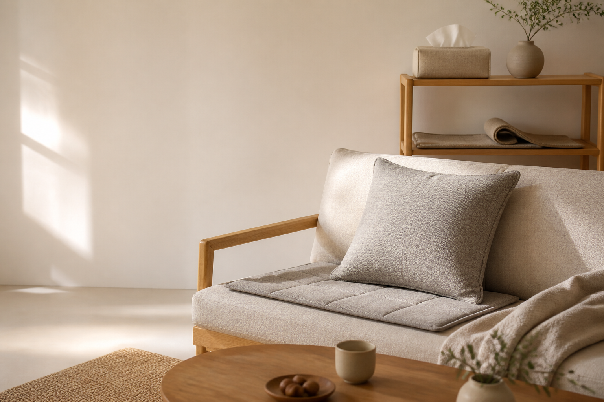

온라인으로 주문한 상품을 받아보고 오히려 마음이 상한 적이 있었습니다. 배송은 빨랐지만 여러 사람의 손을 탄 듯 포장은 흐트러져 있었고, 제품 상태도 깔끔하지 않았습니다.
그때 생각했습니다. 조금 느리더라도 가장 좋은 상태의 제품을 보내는 셀러가 되고 싶다고요. 상자를 여는 순간부터 기분 좋은 쇼핑이 시작되어야 한다고 믿었고, 그 마음으로 이커머스 일을 시작했습니다.
MY STORY · WITH LIVING
조금 늦더라도, 선물처럼 닿는 한 상자를 위해
위드리빙을 시작했습니다.
사진을 준비하면
이곳에 담겠습니다.
WHY I STARTED
온라인으로 주문한 상품을 받아보고 오히려 마음이 상한 적이 있었습니다. 배송은 빨랐지만 여러 사람의 손을 탄 듯 포장은 흐트러져 있었고, 제품 상태도 깔끔하지 않았습니다.
그때 생각했습니다. 조금 느리더라도 가장 좋은 상태의 제품을 보내는 셀러가 되고 싶다고요. 상자를 여는 순간부터 기분 좋은 쇼핑이 시작되어야 한다고 믿었고, 그 마음으로 이커머스 일을 시작했습니다.
“평범한 주문도,
위드리빙을 시작한 마음
선물을 받는 순간처럼 닿았으면 합니다.”

THE HARDEST MOMENT
원목 두루마리 휴지케이스를 판매하던 때였습니다. 큰 화장지는 가운데 심을 빼고 넣어야 한다는 안내가 있었지만, 그대로 억지로 넣은 제품이 빠지지 않는 상태로 반품되어 돌아왔습니다.
고객이 받을 순간을 생각하며 정성껏 포장해 보냈던 제품이 엉망이 된 모습을 보니, 물건보다 제 마음이 먼저 상했습니다. 이 일을 그만두고 싶을 만큼 힘든 순간이었습니다.
그래도 다시 마음을 붙잡게 해준 건 “정성이 들어간 포장에 감동했다”는 한 고객의 리뷰였습니다. 제가 들인 시간이 누군가에게는 분명히 전해진다는 것을 알게 됐습니다.
THE JOURNEY
빠른 배송 뒤에 남은 흐트러진 포장과 제품 상태가 불편했습니다.
받는 순간까지 기분 좋은 쇼핑을 만들겠다고 마음먹었습니다.
정성을 들여 보낸 제품이 망가져 돌아오며 그만두고 싶었습니다.
고객의 리뷰를 통해 제 정성이 제대로 닿고 있음을 확인했습니다.
중국 현지와 한국 출고 전에 살피고, 좋은 상태를 지키도록 포장합니다.
OUR PROMISE
위드리빙은 추가 비용이 들더라도 중국 현지와 한국 출고 전에 두 번 검수하고, 가장 좋은 상태의 제품이 고객에게 닿도록 끝까지 정성껏 포장하겠습니다.
위드리빙 제품 보기